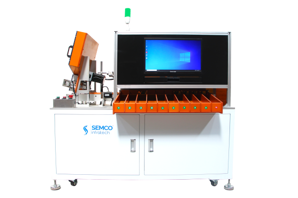
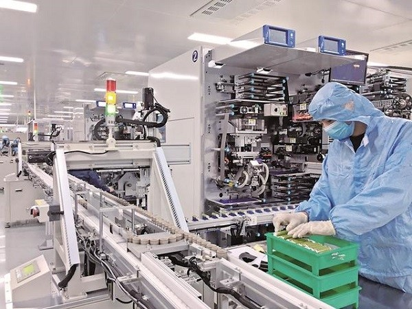
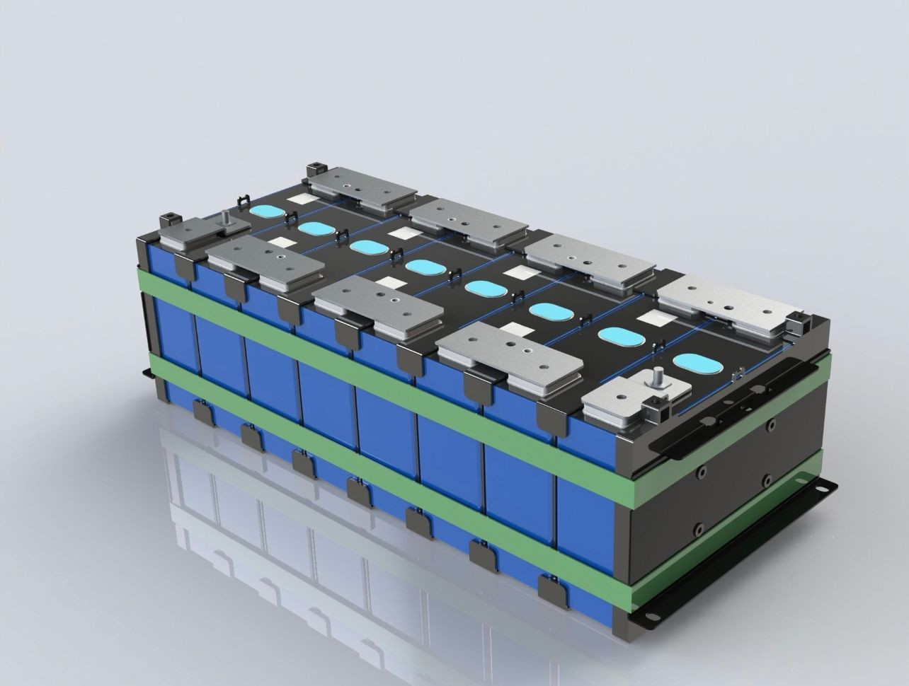

Imagine a world where every battery in your phone, car, or laptop works perfectly, without a halt. That's the magic of cell matching in lithium-ion batteries. It's like finding the perfect puzzle piece to make the whole picture come together.
Join us as we answer the 12 most asked questions about cell matching. From how it boosts battery performance to the cool technologies making it even better let's dive in and discover how?
Q. How does cell matching contribute to overall battery pack performance, efficiency, and reliability?
Cell matching contributes significantly to overall battery pack performance, efficiency, and reliability by optimizing cell compatibility and minimizing disparities in cell characteristics. Proper matching ensures balanced charge and discharge characteristics, maximizes energy utilization, and reduces the risk of premature cell degradation or failure, thereby enhancing the longevity and safety of the battery system.
Q. What are the different methods or techniques used for cell matching, such as grading, sorting, and testing?
Various methods are utilized for cell matching, including grading, sorting, and testing. Grading involves categorizing cells based on predetermined criteria such as capacity and internal resistance while sorting entails physically segregating cells with similar characteristics. Testing involves assessing individual cell performance through procedures like charge-discharge cycles and impedance measurements, ensuring compatibility and uniformity within the battery pack.
Q. How do manufacturers ensure consistency and accuracy in cell matching processes?
Manufacturers ensure consistency and accuracy in cell-matching processes through rigorous quality control measures and adherence to standardized protocols. This includes implementing automated testing procedures, employing highly calibrated equipment, and conducting thorough inspections throughout the manufacturing process. Additionally, continuous monitoring and analysis of cell performance data enable manufacturers to identify and address any discrepancies promptly.
Q. Are there any industry standards or guidelines for cell matching in battery pack assembly?
Industry standards and guidelines play a crucial role in governing cell matching in battery pack assembly, providing benchmarks for quality assurance and performance evaluation. These standards cover various aspects of cell selection, matching criteria, testing procedures, and safety protocols, ensuring consistency and reliability across different manufacturing processes and product lines.

Q. What considerations should be made when selecting cells for a specific application or usage scenario?
Considerations for selecting cells for a specific application or usage scenario include factors such as energy density, power output, cycle life, and safety characteristics. It's essential to evaluate these factors in conjunction with the requirements and constraints of the intended application, balancing performance objectives with cost-effectiveness and reliability.
Q. What are the consequences of mismatched cells in a battery pack?
Consequences of mismatched cells in a battery pack encompass capacity imbalance, voltage drift, and premature failure, each capable of jeopardizing overall performance and reliability. Capacity imbalance can lead to reduced energy storage capacity, while voltage drift may cause instability and potential damage to the battery system over time. Premature failure can occur due to the strain imposed on individual cells within the pack, resulting in shortened lifespan and potential safety hazards.
Q. Discuss potential issues like capacity imbalance, voltage drift, and premature failure.
Cell matching for lithium-ion batteries is vital in addressing issues like capacity imbalance, voltage drift, and premature failure. Capacity imbalance arises from cells with different energy storage capacities, reducing overall pack capacity; matching similar cells mitigates this. Voltage drift, where cell voltages deviate over time, is minimized through precise matching of cell characteristics. Premature failure, often due to strain on mismatched cells, is prevented by ensuring compatibility. In summary, effective cell matching is crucial for optimizing lithium-ion battery performance and safety.
Q. What are some common challenges or limitations associated with cell matching, and how can they be mitigated?
Common challenges associated with cell matching include variability in cell characteristics, limited availability of high-quality cells, and cost constraints. These challenges can be mitigated through advanced quality control techniques, such as statistical analysis and data-driven decision-making, as well as strategic partnerships with reputable cell suppliers. Additionally, ongoing research and development efforts aim to improve cell-matching technologies and address emerging challenges in the field.

Q. What are the implications of cell matching on the overall cost and manufacturing process of battery packs?
The implications of cell matching on the overall cost and manufacturing process of battery packs include factors such as material costs, labor costs, equipment expenses, and quality control measures. While implementing rigorous cell matching processes may entail upfront investments in technology and resources, the long-term benefits in terms of improved performance, reliability, and customer satisfaction can outweigh the initial costs.
Q. Are there any advancements or innovations in cell matching technologies that are shaping the future of battery pack assembly?
Advancements in cell matching technologies, such as advanced data analytics, machine learning algorithms, and automated testing systems, are driving innovation in battery pack assembly. These advancements enable more precise and efficient matching of cells, improving overall pack performance and reducing manufacturing costs. Additionally, research into novel materials and manufacturing processes continues to push the boundaries of cell performance and reliability, shaping the future of battery technology.
Q. How does cell matching align with broader trends in battery technology, such as energy density improvements and sustainability initiatives?
Cell matching aligns with broader trends in battery technology, such as advancements in energy density, sustainability, and electrification. As demand for high-performance, environmentally friendly energy storage solutions continues to grow, the importance of precise cell matching becomes increasingly apparent. By optimizing battery pack performance and reliability, cell matching contributes to the widespread adoption of electric vehicles, renewable energy systems, and portable electronics, driving the transition towards a more sustainable and energy-efficient future.

Q. How can companies ensure they have the right equipment and technology for efficient and accurate cell matching?
Reliable cell matching hinges on having the proper machinery and technology. At Semco Infratech, we understand this critical need. We offer a comprehensive range of cell manufacturing solutions, including high-precision grading, sorting, and welding machines. Our equipment is designed to deliver exceptional accuracy, efficiency, and seamless integration into your production line. Contact Semco Infratech today to discuss how our cell-matching solutions can elevate your battery pack performance and empower you to create future-proof products.